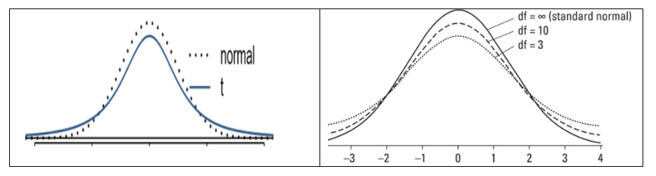
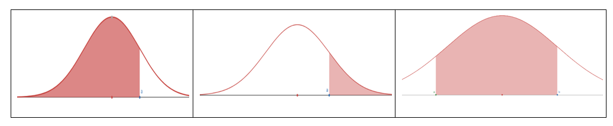

Chapter 11 MATH 224: Inference for Numerical Data
Basic Terms
- Sample mean \(\bar{x}\) is the unbiased point estimator for the population mean \(\mu\)
- A value of \(\bar{x}\) is a point estimate
- Error = \(\mu - \bar{x}\)
11.1 Central Limit Theorem (Sampling distribution of sample mean)
When taking samples of fixed size \(n\) from a population with mean \(\mu\) and standard deviation \(\sigma\), when the observations are independent (take random samples of fixed size \(n\), without replacement); the sample size \(n \geq 30\), then the sample proportion \(\bar{x}\) is approximately normal: \(\bar{x} \sim N(\mu, \frac{\sigma}{\sqrt{n}})\).
When we know the population is normal, no matter what sample size, \(\bar{x} \sim N(\mu, \frac{\sigma}{\sqrt{n}})\)
Notes:
- When using \(\bar{x}\) to estimate \(\mu\) the Standard Error of \(\bar{x}\) is the standard deviation of its sampling distribution: \(S.E. = \frac{\sigma}{\sqrt{n}}\)
- Usually \(\sigma\) is unknown use \(s\) to replace \(\sigma\): \(S.E. \approx \frac{s}{\sqrt{n}}\)
When can the CLT be applied
- If \(n \geq 30\) and \(\sigma\) is known
- If the population is normal and \(\sigma\) is known
- Otherwise we use t-distribution: \(T = \frac{\bar{x} - \mu}{s/\sqrt{n}} \sim t_{df}\), where \(df=n-1\) is the degree of freedom.
t-distribution
Similar to the standard normal distribution: the probability density curve of a t-distribution is centered at 0, and it is bell-shaped. But tails of a t-distribution are thicker than that of the standard normal distribution; moreover, the lower \(df\), the thicker the tails.

Using R to find probability under t-distribution with \(df=n-1\):
- For \(P(T < b)\):
pt(b, df) - For \(P(T > a)\):
pt(a, df, lower.tail = FALSE)or1 - pt(a, df) - For \(P(a < T < b)\):
pt(b, df) - pt(a, df)

To find the cut-off point \(t\) (critical value \(t^*\) or \(t_{\alpha/2}\)) for a given cumulative probability with \(df=n-1\):
- Find \(t\) for \(P(T < t) = p\):
qt(p, df) - Find \(t\) for \(P(T > t) = p\):
qt(1 - p, df)orqt(p, df, lower.tail = FALSE) - \(t_{\alpha/2}\): \(P(T > t_{\alpha/2})\) = \(\alpha/2\): \(qt(\alpha/2, df, lower.tail = FALSE)\)

100\((1-\alpha)\%\) Confidence interval for mean \(\mu\)
Using sample with size \(n\), sample mean \(\bar{x}\), sample standard deviation \(s\), the critical value \(t_{\alpha/2}\): \(\bar{x} \pm t_{\alpha/2} \times \frac{s}{\sqrt{n}}\)
Margin of Error (M.E.)
\(M.E. = t_{\alpha/2} \times S.E. = t_{\alpha/2} \times \frac{s}{\sqrt{n}}\)
Hypothesis Testing for mean \(\mu\) – one sample t test (Same framework as the Hypothesis Testing for proportion)
Steps:
Set up the hypotheses
Compute the t test statistic
Using sample with size \(n\), sample mean \(\bar{x}\), sample standard deviation \(s\), null value \(\mu_0\),
\(T = \frac{\bar{x} - \mu_0}{s/\sqrt{n}}\)
Compute the p-value
Let t-test statistic \(t_1 = \frac{\bar{x} - \mu_0}{s/\sqrt{n}}\) (from step 2)
For left-sided test, p-value is \(P(T < t_1)\) use
pt(t, df)For right-sided test, p-value is \(P(T > t_1)\) use
pt(t, df, lower.tail = FALSE)For two-sided test, p-value is \(P(|T| > |t_1|)\) use \(2*pt(-|t_1|, df)\) or \(2*pt(|t_1|, df, lower.tail = FALSE)\)
Compare the p-value with the significance level \(\alpha\) and make decision
If p-value \(\leq \alpha\), then we have enough evidence to reject \(H_0\) and substantiate \(H_a\);
If p-value > \(\alpha\), then we do not have enough evidence to reject \(H_0\)
The default value of significance level is \(\alpha = 0.05\)
Exercise 1
Without finding the values, arrange the numbers from small to large:
- \(P(Z < -1.25)\)
- \(P(T < -1.25)\) with \(df=10\)
- \(P(T < -1.25)\) with \(df=15\)
- \(P(Z > 1.35)\)
- \(P(T > 1.35)\) with \(df=10\)
- \(P(T > 1.25)\) with \(df=15\)
\[ \_\_\_\_\_\_ < \_\_\_\_\_\_ < \_\_\_\_\_\_ < \_\_\_\_\_\_ < \_\_\_\_\_\_ < \_\_\_\_\_\_ \]
Exercise 2
Use R calculator to find the values of the probability of t-distribution. Sketch the t-curve and shaded region.
- \(P(T < -1.25)\) with \(df=10\)
- \(P(T < -1.25)\) with \(df=15\)
- \(P(T > 1.35)\) with \(df=10\)
- \(P(T > 1.25)\) with \(df=15\)
Exercise 3
Use R calculator to find the critical t-value \((t_{\alpha/2})\), rounded the result to 4 decimal places.
- CL = 90%, \(n = 7\)
- CL = 98%, \(n = 20\)
- CL = 99%, \(n = 28\)
- CL = 95%, \(n = 9\)
Exercise 4
Find confidence interval with the sample information:
(a) \(n=5, \bar{x}=4.1, s=1.2\), 90% confidence level
(b) \(n=15, \bar{x}=4.1, s=1.2\), 90% confidence level
(c) \(n=5, \bar{x}=4.1, s=1.2\), 98% confidence level
(d) \(n=15, \bar{x}=4.1, s=1.2\), 98% confidence level
Exercise 5
What affects the width of the confidence interval? (You may use your observations from Exercise 4 for reference)
Exercise 6
(Working backwards) A 95% confidence interval for a population mean \(\mu\) is given as (18.98, 20.02). This confidence interval is based on a simple random sample of 36 observations. Calculate the following:
(a) The sample mean
(b) The margin of error
(c) The critical t-value (use t-distribution)
(d) The standard error (use the result of c)
(e) The sample standard deviation (use the result of d)
Exercise 7
Find the P-value for the given sample sizes and test statistic:
(a) \(n=26\), \(T=2.485\), for right-sided test
(b) \(n=18\), \(T=-1.45\), for left-sided test
(c) \(n=26\), \(T=2.485\), for two-sided test
(d) \(n=18\), \(T=-1.45\), for two-sided test
Exercise 8
A random sample of 25 New Yorkers were asked how much sleep they get per night. The result shows:
\(n=25, \bar{x}=7.73, s=0.77\)
The point estimate suggests that New Yorkers sleep less than 8 hours per night on average. Is the result statistically significant?
Follow the steps to conduct the hypothesis test.
(a) Write the hypotheses in symbols: \(H_0\): ____________ \(H_a\): ____________
(b) Calculate the test statistic
(c) Compute the P-value and draw a picture
(d) What is the conclusion of the hypothesis test, using the significance level \(\alpha=0.05\)
(e) If you were to construct a 90% confidence interval that corresponds to this hypothesis test, would you expect 8 hours a night on average to be in the interval?
Exercise 9
Georgianna claims that in a small city, the average child takes less than 5 years of piano lessons. We have a random sample of 20 children from the city, with a mean of 4.6 years of piano lessons and a standard deviation of 2.2 years. Evaluate Georgianna’s claim using a hypothesis test.
(a) Write the hypotheses in symbols: \(H_0\): ____________ \(H_a\): ____________
(b) Calculate the test statistic
(c) Compute the P-value and draw a picture
(d) What is the conclusion of the hypothesis test, using the significance level \(\alpha=0.05\)